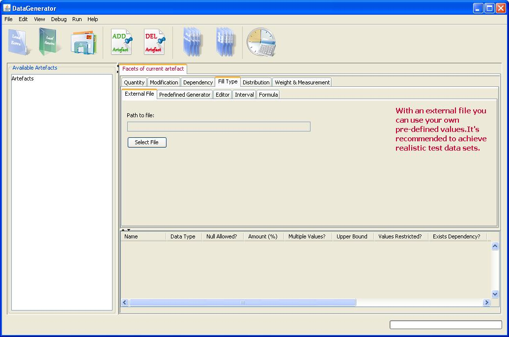
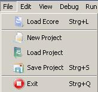
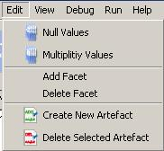
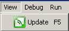
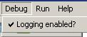
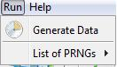
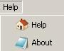
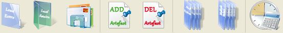

|

The DataGenerator can be used to generate various sets of test data.
-
Specify how many test data sets should be created (Quantity).
-
Choose data from an external file, use the predefined generator, Editor
or Interval
-
Integrated probability distribution (Normal distribution, uniform
distribution)
-
Specify the attributes you want to generate data for
The Menu Bar
File Menu

Load Ecore
This menu is used to load ecore files. You can also use the
shortcut Ctrl + L to
load ecore files.
New Project
This function will be used to create a new project. It is not available, as the
code isn't implemented yet.
Load Project
This function will be used to load a project. It is not available, as the code
isn't implemented yet.
Save Project
This function will be used to save a project. The shortcut
Ctrl + S can be used. It is not available, as the
code isn't implemented yet.
Edit Menu

Null Values
This opens a new window where you can set the facets that should allow null
values.
Multiplicity Values
Opens a new window where you can specify wheter multiple values of a facet are
allowed or not.
Add Facet
This will be used to add a facet, but the source code is not yet implemented.
Delete Facet
This will be used to delete a facet, but the source code is not yet implemented.
Create New Artefact
This will be used to create a new artefact. The source code is not yet
implemented.
Delete Selected Artefact
This will be used to delete a selected artefact. However, the data structure will change, depending on the artefact deleted. This is because, a semantic validation is applied to the left overs. For more information about it, see the Bachelor Thesis on chapter Meta-Meta-Data Structure.
View Menu

The View Menu has an update option to refresh the actual view. The shortcut for this option is F5. Normally, you don't have to use it, because an update occurs on notifications within the model layer. But you can force it, to get an update manually.
Debug Menu

In the Debug menu you can enable/disable the logging option. The diagnostic
files will be stored in the programs subfolder Log. The option is stored in the setup file. That means, whenever you change it, it is reflected to this file to keep the data integrity.
Run Menu

The Run menu contains an option to start generating test data. You also have the opportunity to change the random number generator (RNG). The default one is set to MersenneTwister. This is a good and fast everyday generator. If you change the RNG in the system it is set at runtime, only. If you wanna change permanent, please have a look in the setup.xml file. But be aware, that changing directly may affect the xml integrity.
Help Menu

Here are the Help and About options. The Help option opens this document.
About contains information about the Data Generator and the programmer.
The Icon Bar

The icon bar provides quick launch icons for the following tasks
(from left to right):
-
Load Ecore file
-
Load Project
-
Save Project
-
Add Artefact
-
Delete Artefact
-
Null Values
-
Multiplicity Null Values
-
Generate Data
|

){kind=link}
){kind=link}